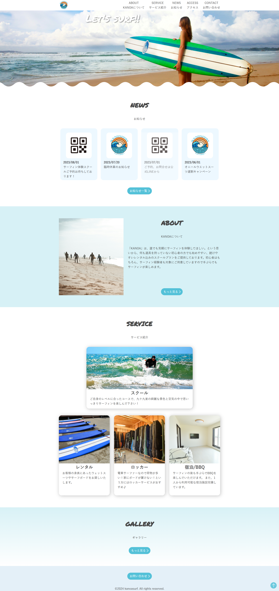
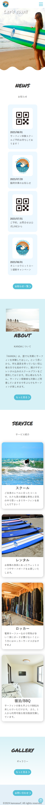

KANOA SURF
【概要】
課題制作として、既存のサーフスクールのリニューアルサイトを制作
【制作期間】
4ヵ月（課題制作）
【使用ツール】
Photoshop / Figma / VScode
【目的】
サーフィンに興味ある人が1人でも多く、サーフィンを体験してもらいたい
【ターゲット】
- 旅行がてらにサーフィンをやってみたい方
- 1人/友人と体験してみたい方
- これからの趣味にしたい方
【デザインイメージ】
- コンセプト：サーフィンに挑戦したい人へ歓迎・親しみのあるサイト
- カラー：海から連想されるブルー系をメインカラーとして、ロゴにも使用したオレンジをアクセントカラーとして使用
- 使用フォント：Permanent Marker / Yu Gothic
【工夫した点】
ブルー・白をバランスよく使用しながら清潔感を出し、利用者が見いやすいように工夫しました。
スクロールをできるだけせずに全体が読めるように、写真の横に文字を入 れたり、写真をバックグラウンドに設定し縦に長くならないように工夫しました。
海にちなんで波のアニメーションを挿入することでサイトに動きがある設計にしました。

